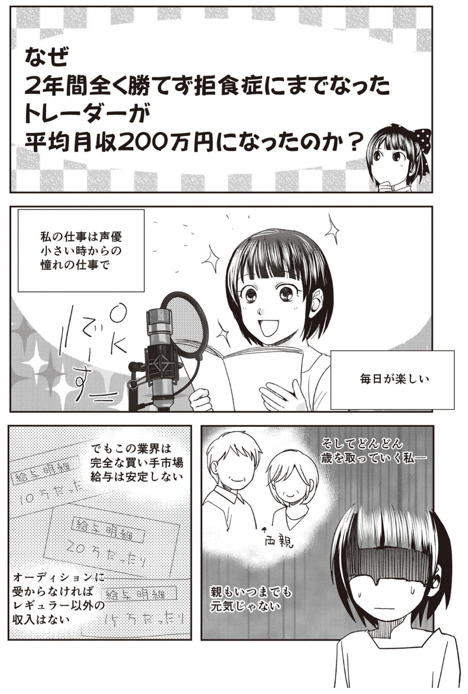

なぜ2年間全く勝てず拒食症[きょしょくしょう]
なぜ2年間全く勝てず拒食症[きょしょくしょう]
거식증にまでなったトレーダーが平均月収200万円になったのか？


강조할 단어 AA
강조할 단어 BB
강조할 단어あㅇあ CC
AM7時。 毎日同じ時間に起きる。 今はもう、アラームがなくても自然に目覚めあるようになった。 そうなるように、自分を改善して来たから。
起きたらまず、口をゆすいで白湯を飲んで脳と身体を活性化させる。 朝食を取って、BSテレビで経済ニュースを観て、大きをな経済指標、要人発言をチェックし、発表時間をスマホアラートにセット。
顔を洗って歯を磨いて……。 ここまでで大体 1時間。 これら全ては、この「後」が淀みなく流れるために私が作り上げて来たルーティン。
「世界中の誰よりも高いところから、誰よりも素早くて ポンドオージー（GBPAUD） （GBPAUD）を売る」きっと朝起きてすぐ、 ポンドオージー（GBPAUD）
（GBPAUD）を売る」きっと朝起きてすぐ、 ポンドオージー（GBPAUD） の今日の方向のみを考えている女子 FX投資家は私だけだと思う。
の今日の方向のみを考えている女子 FX投資家は私だけだと思う。
ポンドオージー（GBPAUD） は、英国のポンドとオーストラリアの豪ドルを両替するための通貨ベア。 FXの世界では「マイナー通貨ペア」と言われる組み合わせのひとつ。
は、英国のポンドとオーストラリアの豪ドルを両替するための通貨ベア。 FXの世界では「マイナー通貨ペア」と言われる組み合わせのひとつ。
ポンドオージー（GBPAUD） の貨幣変換といっても、英国ポンドを直接、豪ドルに替えることは出来ないため、一度、英ポンドを米国ドルに両替して、米国ドルを豪ドルに交換することになる。
の貨幣変換といっても、英国ポンドを直接、豪ドルに替えることは出来ないため、一度、英ポンドを米国ドルに両替して、米国ドルを豪ドルに交換することになる。
「メジャー」と呼ばれるドルストレートの組み合わせ (米国ドルが絡む通貨べア) よりも売買コストは高くなる。
それが「マイナー」と呼ばれる通貨ペア達。 組み合わせは父くほど多い。
そんなマイナーに属する ポンドオージー（GBPAUD） だけに絞って、売りだけを狙ってトレードする。 それがリオンのスタイル。
だけに絞って、売りだけを狙ってトレードする。 それがリオンのスタイル。
FX 用語で売りのことは「ショート」、ショート (売り) だけを専門に取引するトレーダーは「ショーター」。
ロング (買い) だけに特化したトレーダーは「ロンガー」と呼ばれている。
私、リオンは ポンドオージー（GBPAUD） ショーター (図1)。
ショーター (図1)。
リオンは誰が見ても分かりやすいナルシストで、 ポンドオージー（GBPAUD） というマニアックな通貨ペアを相手にひたすら売りのみにこだわってここまで来られたことを、自分の中で似め称えている。
というマニアックな通貨ペアを相手にひたすら売りのみにこだわってここまで来られたことを、自分の中で似め称えている。
もちろん誰にも分からないように。
図1 : ポンドオージー（GBPAUD） ショーターのリオン
ショーターのリオン
FXトレードは株式投資と比較しても、自由度が高過ぎる。
取引する通貨べアは ? ロング (買い)、それともショート (売り) ? 取引する時間帯は ? 取引ロット (数量) は> デイトレ、スイング、それともスワップ (通貨問の金利差による利益) 狙い？
何もかも自由で、あらゆることを自分一人で決めなくてはならない。
「この自由さが勝ちを遠ざけてしまっているのではないのかな」。
ポンドオージー（GBPAUD） のショートだけに狙いを絞るようになったのは、FXの「自由度」に振り回され 2年もの間、全く勝てなかったから。
のショートだけに狙いを絞るようになったのは、FXの「自由度」に振り回され 2年もの間、全く勝てなかったから。
トレードは層肉強食。 人の損失を利益に変える。
過酷なFX の世界で生き残るために、私が選んだ最良の策は「何をするか」ではなく「何をしないか」。
数々の挫折や失敗を経て辿り着いたのは、究極の「しない」を探すことだった。
FXの取引は世界中でほぼ 24時間行われている。
だけど 24時間眠らずに取引できる人間はいないと思うし、「もっと儲けたい ❕」と欲張ったり、自動売買ソフトを使って 24時間取引したりしても、多分、望み通りの結果にはならない。
● TYO (東京) 時間（朝8 時ぐらいから 12 時ぐらいまでリオンはトレード。 遅くても 16時にはトレードを終了）
● EU（欧州）時間オープン（夕方 16時 ～ 18 時。 激しい値動き）
● NY (ニューヨーク ) 時間オープン（夜21時 ～ 0時。 遅い時は深夜 1時 ～ 2時ぐらいまで活発に取引される）
取引される時間帯によって、FXの値動きには大きな変化や特色があるので、全ての時間帯で取引していても恐らく勝てない。
世界中で巻き起こる FXの荒波に飲み込まれ、菩悦と消える人をたくさん見て来たし、私も漢層●●まで後一歩だった。
選択肢を出来るだけ減らして行く。
欧米の投資家がトレードを終えた TYO（東京）時間は値動きも穏やかで、ローソク足の上ヒゲサインや移動平均線などのテクニカル指標が示してくれるサインの速度も穏やか。
比較的ゆっくりで値幅は出ないものの、安定した値動きになりやすい TYO（東京）時間。
私が一番、居心地のいいフィールド。
TYO（東京）時間中に全てのトレードを終わらせ、続くEU（欧州）時間以降や翌朝までポジションを持ち続けることはほとんどない。
時間を絞り込んでいるから、私の環境認識、戦略の組み立てはとても短時間で済む。
2022年 9月 8日、いつものように、PCモニタ上の「MT4 (メタトレーダー 4)」に ポンドオージー（GBPAUD） （GBPAUD）のチャートを表示。
（GBPAUD）のチャートを表示。
ローソク足 1本が1週間の値動きを示す「週足」 から順番に、「日足」、「４時間足」、「１時間足」それぞれの今日の形状を確認した後、
上位時間足 (時間の長いローソク足) から得た情報を、エントリーの時に使う、５分足チャートで整理して行く。
MT4 は世界で一番、トレーダーに使用されている高機能チャートソフト。 自動売買やバックテスト (過去の値動き検証) も行える。
私のメイン海外 FX 口座は最大レバレッジ 1000倍の 「AXIORY (アキシオリー)」。 1ロットは １０万通貨。
2022年 から 2023年現在、私の １回のトレードで一番多いパターンは ３ ～ ６ロット (３０ ～ ６０ 万通貨) で ３本 ～ ５本。
ロット数はその時々の状況で変える。 チャンスだと思えば 6 で、少し微妙だなと思えば 3 にしている。
6ロット (60万通貨) になると 10pips 動くだけで、1豪ドル 92円 (2023年 2月 1日現在) のレート (※)
で計算して、5万 5200円もの金額が一瞬で上下する。
※「レート」とは通貨同士を交換する際の価格のこと。 「為替レート」とも言いますが、本書では「レート」で統一して表記します。
少し前までは 1000通貨 の 取引でさえ怖かったのに、今ではここまで大きな投資金額でトレード出来るようになっている。
それはこれまで記録した7割を超える勝率が自信となって、私を支えてくれているから。
FX という戦場に降りたら、誰もが自分しか頼れない。
自分を守るのは、自分がして来た行動の結果から来る自信。
「落ち着いて。 大丈夫」
それだけの準備はして来ている。 だから絶対に出来る。
朝一番の白湯から全てがここに繋がっている。
「生きてるみたい」
伸びたり縮んだり[のびたりちぢんだり]
伸びることと縮むこと。伸びたり縮んだりすること。、常に規則性もなく動き続けるローソク足は、時にそれ自体が生命体で意志があるんじゃないかと思わせる。
陰線[いんせん] 음봉
で終わるかと思ったその足は、形が確定するラスト数秒で下ヒゲ陽線に変わってしまう。
「あなたの思い通りにはなりませんよ」と言われているみたいに。
PC 画面の ５分足チャートを見つめながら、リオンはローソク足が作る形態のひとつ、
「上ヒゲ」(実体部分の上部から長いヒゲが出たローソク足。 レートが急上昇して高値をつけた後、急速に失速したことを示す)を常に探している。
これが出るか出ないかで今後が大きく変わって来る。
やがて、５分足チャートの ポンドオージー（GBPAUD） は、待ち望んだ「頂点」を作る動きを見せる。
は、待ち望んだ「頂点」を作る動きを見せる。

図2 : 2022年 9月 8日、大陽線後の下落を狙ってリオンがショートしたポイント
それを示した[しめした]のが図2。 遅れないように、でも早過ぎないタイミングで 3 本のショートを次々と入れていく。
マシンガンを撃つ時のような大胆さとアフリカの小さなハンター「リカオン」のような狡猾さ[こうかつさ]
「狡猾（こうかつ）」とは、自分だけ得をしようと、さりげなくずる賢くいことをさす言葉です。 「狡」はずるい、悪賢い、すばやいことを、「猾」は悪賢いことやかき乱すことを意味しています。 獣偏に「交」と書く「狡」は、身を交わして逃げる獣、獣偏に「骨」と書く「猾」の字は、ずる賢いさまを表します。で。
普段は小心者なのに、いざトレードをする時は私の中に違う自分が生まれるように思う。
エントリーの時、「大丈夫。 私、出来る」と実際に口に出す癖は負けている時から 勝てるようになった今も変わらない。
パン! パン
MT4 から約定音が聞こえて、頂点を撃ち抜いた感覚の後には「ナイアガラ (※) になるといいな」と願う。
※リオンの FX にまつわるアレコレ
滝のように流れ落ちる局面はショーター語で「ガラる」と言われます。 ナイアガラ肖布の「ガラ」から来ていると思われます。
初動でザーッと、大きく下へ進んでくれたら。
そうすれば、逃げ悪クロンガーさんの投げ売り (損切り) と、「これは下 (に行く)」と判断した追従のショーター達の新規売りで、流れは下へ加速して行くんだけど。
ここまでがエントリー。 やっと少しだけ力を抜く。 エントリーしてしまえば、トレーダーに出来ることはあまりない。
この後は相場次第なので、その流れの中で最善の策をとって行くために見守り続ける。
図2 にもあるように、 ポンドオージー（GBPAUD） は 大陽線 a をつけて急上昇している。
は 大陽線 a をつけて急上昇している。
ショートした箇所は 図2 に示した[しめした] ３か所で 各 ６ロット、計 180万通貨。
「えっ、こんな高いところで売るの ?」と思う人も多いかも。 再び a のような大陽線が突如[ とつじょ ]
とつぜん、갑자기出現してしまったら、大損しかねない。
5分足ベースだけで見たら、高値圏の危ない取引に見える。
「下がる前は大きく上がる」
これは、既に 2年間以上、 ポンドオージー（GBPAUD） のショートだけで日々の勝率 7 ～ 8割、利益数千万円を積み[つみ]上げて来たリオンが持つ、経験から感覚[かんかく ]
のショートだけで日々の勝率 7 ～ 8割、利益数千万円を積み[つみ]上げて来たリオンが持つ、経験から感覚[かんかく ]
감각。
エントリーする時には 迷い[まよい]
망설임 も 恐れ[おそれ] もあまりない。
「ショートなら負けない」と思えるだけの経験は積んで来たから。
a のような 大陽線 が 出る時、怖いと思う人が多いかもしれないけれど、
それは重要転換地点に差し掛かる直前によく見られる「最後の大陽線」。
これは 『転換のサイン』 になることが多い。 ５分足レベルの小さな「バイイングクライマックス(買いの勢いがピークに達した瞬間[しゅんかん] のこと)」。
予想に反して上昇となった場合、大陽線 a の上ヒゲの頂点を超えたところで 躊躇[ちゅうちょ]
망설임、주저 なく、切れる (損切り決済して損失を確定すること)。
そこを超えたら粘る[ねばる]
根気よく持ちこたえ、がんばる。
끈기理由がないから迷わない。
それが 「頂点ハント」。
この後の値動きが上だった時、 迷い[まよい]
망설임 なく損切り出来る。 というより「ここを上に抜けたら切るしかない」という位置でエントリーしているのだから粘る理由が全くない。
だから、超頂点でのエントリーは怖くないし、受けるダメージはかなり小さい。
人が怖がって近づけないくらいの「高さ」まで可能な限り引きつけてポジションを持つ。
今の私が世界で一番になれる、唯一の可能性がここにある。
リアルだったら、「キミは本当に冷たいよね」と言われる ぐらい、
自分の彼 (ポジション) と
素早く[すばやく]
動作や頭の回転が敏捷で、継続する時間が比較的短い様子を表す言葉です。
縁を切れる「損切り力」があれば、
頂点ハントは今の私にとって最高で最良の戦略。
図3 は、エントリーした際につけた高値がこれまでの ５分足チャートやより長い時間軸の ４時間足チャートで、どの位置にあったかを示した[しめした]もの。
図3 2022年 9月 8日前後の ポンドオージー（GBPAUD） ５分足チャート と ４時間足チャート
５分足チャート と ４時間足チャート
図3 : 2022年 9月 8日前後の ポンドオージー（GBPAUD） ５分足チャート と ４時間足チャート
５分足チャート と ４時間足チャート
5分足という小さな時間の値動きは、４時間足 や 日足 という大きな時間軸に包まれ[くるまれ]、影響を受け、支配されている。
図3 下段の ４時間足を見て分かるのは、 ポンドオージー（GBPAUD） が 2022年 9月 6日に入って下降トレンドのレンジ相場上限を上に突破[とっぱ]
が 2022年 9月 6日に入って下降トレンドのレンジ相場上限を上に突破[とっぱ]
돌파したものの、上ヒゲを連発して上昇が止まっていること。
４時間足チャートには、上位時間足の日足チャートの 20日移動平均線 (SMA) も 描画[びょうが]しているが (カクカクした右肩下がりの線)、その前後で揉み合い[もみあい]
相場が小刻みに高下を繰り返すことが続いているのが分かる。
この日、2022年 9月 8日の TYO（東京）時間 14時までに 3本のショートを入れたのは、そんな下げ相場の反転上昇が力なく停滞した場面。
図4 に図2のエントリーポイント 3つをもう一度、示した[しめした]。
図4 : 2022年 9月 8日のショートエントリーのポイント
● 1本目のショートは 陽線 b の上ヒゲ高値を超えられずに下落したポイント①
● 2本目のショートはトリプルトップをつける過程の ２度目の安値 を割り込んだポイント②
● 3本目のショートは、トリプルトップの １度目の安値 や ５分足の ２０本移動平均線 (以下、「20sma」と表記) まで上昇したものの、跳ね[はね] 、跳ね返される
⇒ 依頼や要求に取り合ってもらえないこと。
はね返される返されて上ヒゲとなり、下落が加速しそうになったポイント③
本来は、最初につけた 陽線 b の上ヒゲ高値をいったん超えて上昇した後、下落し始めたところでショートしたほうが安全性は高くなる。
ただ、より大きな時間軸で下降トレンドが明白な時に出現した 図4の a のような大陽線は常に疑う[うたがう]
의심하다こと。
何度も痛い目に遭って[あって]得た、大事なヒント。
この時は良い位置でエントリー出来ている。
その後、 ポンドオージー（GBPAUD） は ほぼ読み通り、
は ほぼ読み通り、
５分足の ７５本移動平均線 (以下、75sma) を割り込み、約 4時間 近く下落が続いた。
それまでサポート (支持帯)として機能して来た水平線や移動平均線を割り込んだ後、いったん上昇に転じたものの、それまでのサポートラインが今度はレジスタンス (抵抗帯) に変化して上昇を 阻む[はばむ]
막다 。
これは「サポートレジスタンス転換」(※) と呼ばれる。
※リオンのFX にまつわるアレコレ
人によっては「サポレジ転換」、「レジサポ転換」などと呼ぶこともあります。 正確に言うならち、サポートがレジスタンスに変わる変化を「サポートレジスタンス転換]、レジスタンスがサポートに変わる時は「レジスタンスサポート転換」 ではないでしょうか。
ショーターの私は「今までの サポートライン が レジスタンスラインに変わって欲しい」と思って見ているので「サポートレジスタンス転換」と呼んでいます。
FXトレードを行う上で、これほど分かりやすいサインはない、というほど大事なもの。 この「 Support / Resistance Line」を上手く攻略できるかどうかが勝ち負けを分ける。
図5 : ポンドオージー（GBPAUD） ５分足チャートの Support / Resistance Line
５分足チャートの Support / Resistance Line
図5 はショートエントリーした後の、 ポンドオージー（GBPAUD） の値動き。
の値動き。
図の 水平線 A のラインは下落[げらく]後に一度、反発に転じた安値 を起点に引いている。
その水平線 A が 20sma と重なった① の Zone で、再び下落に転じている。
この水平線 A は サポートレジスタンス転換の典型例。
安値 a で下落を止めた水平線 A が今度は上昇を 阻む[はばむ]
막다 壁[かべ]
벽に変身している。 そこに、有有肩下がりの 20sma も重なっている。
① のポイントは二重の意味で、再上昇を阻む[はばむ]
막다
他のものの行く手をおさえて邪魔をする。防ぎとめる。強力なレジスタンスになっている。 そのラインを上抜けることが出来なかったら、下落が加速する可能性が高い。
その後、やはり水平線 A と 20sma に跳ね[はね] 、跳ね返される
⇒ 依頼や要求に取り合ってもらえないこと。
はね返される返されて下落に転じした。
ショートポジション ６０万通貨 x ３本 をそのままホールド (保有し続けること) し続ける。
サポートレジスタンス転換に誘われるように下落が加速。
② のポイントでは、2度トライして割り込めなかった日足チャートの 20sma を大きく割り込み、戻りも全くないまま急落した。
私が使っている「Rion チャート」は、５分足チャート上に週足、日足、４時間足、１時間足という時間軸の長い「上位時間足」の 20本移動平均線 (「上位足ミドル」と呼ぶ) を表示させている。
MT4 に標準搭載[とうさい]
탑재されているインジケーターのひとつ「ボリンジャーバンド」のDefault設定の中央線は、どの時間足でも「２０本移動平均線」に設定されている。
真ん中の線なので「ミドル」と呼ばれる重要なライン。
上位足ミドルは「マルチタイムフレーム分析：MTF」という、値動きを多角的に見ることが出来るアイテムでもある。
マルチタイムフレーム分析を使って、上位足ミドルに挟まれた「 Zone 」の中で値動きを考えるのも、リオン式の特徴のひとつ。
日足ミドルを割り込んだ後、その下に ４時間足ミドル (４時間足の 20本移動平均線) が位置している場合、次の値動きは日足ミドルと ４時間足ミドルに挟まれた Zone を一区切りの値幅と考え、その付近を利益確定 (略して「利共」とも言う) 目標に決めておく。
次の図6 に示した[しめした]ように、日足ミドルを割り込んだ後、その下に位置する ４時間足ミドルに向かって下落していた。
図6 : ショートエントリー後の ポンドオージー（GBPAUD） ５分足チャートの推移[すいい]
５分足チャートの推移[すいい]
추이
４時間足ミドルは今、 ポンドオージー（GBPAUD） に参戦しているトレーダーが一番、目安にしやすい下値のターゲットになっている。
に参戦しているトレーダーが一番、目安にしやすい下値のターゲットになっている。
その後、横ばいで 推移[すいい]
① 時が経過してゆくこと。
② 時がたつにつれて、物事の状態が変わってゆくこと。
추이 し始めたところで後から入れた 2本目、3本目のポジションを早々[そうそう]に決済。
日足ミドル近辺まで、再度上昇して、そのラインが本当にサポートからレジスタンスに転換したのか、確かめるような値動きが発生することも多い。
「値を見に来る」と呼ばれている現象。
点線で示した[しめした]仮想の動きがそう。 今回はそうしたサポートレジスタンス転換を確かめに行く動きは起こらず、図6 の② の Zone で揉み合い[もみあい]
相場が小刻みに高下を繰り返すこと。 ただ、ここから再び上昇する可能性もないとは言えない。
利益が出ている時は多少早めでも利確して「勝ち逃げ」に徹する[てっする]
철저하다。
一度利益が出たトレードは絶対に負けにはしない。 その １回が小さな利益で終わっても、週間や月間でのトータルの成績で考える。 それが私の高勝率を支えている。
2本目のショートは 約 70pips、3本目のショートは 約 50pips の利益に。
当日の １豪ドル 約 ９７円のレート x ６０万通貨で 日本円換算すると、合わせて ６９万円強の利益、１回のトレードで得た金額としては、充分[じゅうぶん]
충분히過ぎるくらい。
ただ、図6 の ② のレンジを下抜けして、４時間足ミドルにタッチする、もしくは割り込む展開にも期待が持てた。
そこで最初に入れて大きな含み益が出ている 1本目のショートはそのまま残して、TYO市場で為替取引が一段落する 16時までは様子見。
16時 6分、約 100pips (約 58万円) の利益が出たところで完全撤収[てっしゅう]
철수。 その後の値動きを示した[しめした]ものが次の図7。
トレードを終えた後、16 時のEU（欧州）時間に入った ポンドオージー（GBPAUD） は勢いよく反転。 TYO（東京）時間の下落をほぼほ全戻しするほど上昇した。
は勢いよく反転。 TYO（東京）時間の下落をほぼほ全戻しするほど上昇した。
４時間足ミドルを割り込んだ後、急激[きゅうげき]
급격한に戻した値動きの形状は「行って来い」の動き。 どの通貨ペアでも見ることが出来る。
図7 は下落した後、上昇したパターン。
上昇した後、行って来いで下落するパターンもある。
「急激[きゅうげき]
급격한に上げた後は、ほぼ同じ値幅、急激[きゅうげき]
급격한に下落する現象が起きやすい」
そうした値動きを、その形から「 タケノコ 」(図8) と私は呼んでいる。
」(図8) と私は呼んでいる。
その角度が鋭いほど、「行って来い率」が高く、短期間で決着する。
上昇 ⇒ 下落の場合、同じ値幅分だけ動いた後は、また上げることも多いので基本、「 タケノコ が生え始めた根元[こんげん]
が生え始めた根元[こんげん]
뿌리」付近までをショートで収穫[しゅうかく]
수확。
タケノコ 頭部が作られたのに、なかなか落ちず時間がかかり過ぎる場合は逆を疑うようにする。 頭部を超えたら、かなり危ないので必ず、切る。
頭部が作られたのに、なかなか落ちず時間がかかり過ぎる場合は逆を疑うようにする。 頭部を超えたら、かなり危ないので必ず、切る。
図7 : 2022年 9月 8日、利益確定後の ポンドオージー（GBPAUD） ５分足チャート
５分足チャート
予定していた 16時前後で利益を確定することが出来た。
解放感と達成感の中でやっと全身が緩む[ゆるむ] ゆるくなる。
느슨한。
かなり強くマウスを握って[にぎって]いたみたい。
リオンのFXのフィールドは朝7時ぐらいから始まり、夕方15時 59分には終了する TYO市場。
チャートは 24時間動くからといって、真夜中までずっと取引し続けると、判断力も鈍り[にぶり、なまり]
둔하다、まともなエントリーが出来ない。
「一番、脳が活発で、値動きが緩やかな TYO（東京）時間、このひとつの市場だけでベストのトレードをする」
これが、私の選んだスタイル。 出来れば朝 ９時から １０時までにエントリーして、AM 中に取引を終えることを目指しているけれど、この日は予想通りの展開となったため、比較的長い時間をかけて利益を伸ばすトレードになった。
期待が持てる展開になった時はこのように保有し続けることもある。 今回は TYO（東京）時間内で終える、というルールをしっかり守れて、合計 １２７万円超の利益なら「Good Job、自分」。
図8 : 2022年 9月 8日夕方16時前後に出現した「 タケノコ 」
」
「最近のトレードではこれが No.1 かなぁ」
PCを閉じて普通の女子になる。
今日は良いトレードが出来たのだから、もうチャートは見ない。
これも大事。 後は今日 1日、完全な自由時間。
「お洋服、 見に行きたいな」